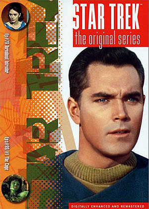

|

Publicado originalmente
como notícia, em 2001

O último volume da
Clássica nos EUA
Confira o review
completo do disco que fecha a coleção americana de Jornada,
compreendida por um total de 40 volumes
|

|
O Trek Brasilis, sempre sintonizado com o que acontece no mundo de Jornada, adquiriu e assistiu ao volume 40 dos DVDs da Série Clássica que foi lançado nos EUA no dia 12 de dezembro de 2001. Confira o review do disco, que fecha a coleção da Série Clássica nos Estados Unidos.  O disco é o único dos 40 lançados que traz 3 episódios ao invés de 2. São eles "Turnabout Intruder", o último episódio da série, e duas versões de "The Cage", o episódio-piloto de Jornada que nunca foi ao ar. Turnabout Intruder O último episódio da série teve
sua imagem e som remasterizados, como ocorreu com todos os episódios
anteriores lançados em DVD. A imagem dos anos 60 é cristalina
como a de um filme ou episódio que tivesse sido produzido nos
dias de hoje. As cores são vivas, realçando como a Série Clássica
teve um colorido que refletiu a tendência daquela década. As duas versões de "The Cage" O grande apelo desse disco é que ele traz duas versões de "The Cage". Confira do que se trata cada versão na palavra do nosso colunista Luiz Felipe do Vale Tavares: The Cage - Restored Version
"Essa foi a segunda versão lançada nos EUA e a primeira a ser lançada no Brasil. É inteiramente colorida, e aí surge um mistério. Durante alguns anos a Paramount alegou que não existia nenhuma cópia do "The Cage" inteiramente colorida que houvesse sobrevivido. Eu li alguns anos atrás que essa versão é exatamente a mesma da anterior, só que as cenas em preto e branco foram colorizadas por computador. Há vários indícios de que tal afirmação seja verdadeira: a) a época do lançamento coincide com o início da "heresia" de colorizar por computador filmes originalmente branco e pretos. Graças a Deus essa mania durou pouco, pois vários clássicos do cinema foram comprometidos na época, como King Kong e Casablanca; b) as cenas que eram branco e preto e que passaram a ser coloridas possuíam uma palheta de cores muito limitada e artificial, o que também condiz com os primórdios da colorização por computador; c) o áudio dessas cenas ainda era de péssima qualidade e tinha as vozes originais dos Talosianos, ou seja, era o áudio original das cenas em branco e preto. Até hoje acredito que ninguém sabe ao certo a origem dessas cenas coloridas. Só a Paramount sabe o "segredo" e nunca se manifestou a respeito." A versão totalmente colorida apresentada neste volume 40 vem com a imagem cristalina exatamente como "Turnabout Intruder" e demais episódios da Série Clássica lançados anteriormente em DVD. O som foi remasterizado em Dolby Digital 5.1, porém em muitos momentos deixa a desejar devido a precariedade do material original. O episódio de 1h03 está dividido em 14 sequências no menu de escolhas de cenas. Conta com legendas em inglês e closed-caption. Não há trailer para esse episódio. É sem dúvida a melhor imagem e som que "The Cage" já teve. Será difícil superar o que está contido nesse DVD. The Cage - Original Version
"Foi a primeira versão do "The Cage" a ser lançada nos EUA. O episódio foi reconstruído a partir do "workprint" original de Gene Roddenberry em branco e preto com cenas coloridas extraídas do episódio duplo "The Menagerie". Pode-se notar nessa versão que a voz de muitos Talosianos mudam de repente de uma hora para outra. O motivo é que o "workprint" original com as cenas em preto e branco continha a trilha sonora original, com as vozes masculinas dos Talosianos. Quando essas cenas do "The Cage" foram utilizadas em "The Menagerie", os produtores acharam conveniente redublar as vozes para que parecessem mais femininas. Alguns efeitos sonoros também foram introduzidos. Como essa versão é um remendo de duas cópias de qualidades de áudio e vídeo bem diversas, pode-se notar que o som varia de péssimo para bom no decorrer da fita, assim como a imagem. Essa edição jamais foi lançada no Brasil e contém a introdução de Gene Roddenberry, que a CIC Vídeo erroneamente dizia conter na primeira versão lançada no Brasil, inteira a cores." Na nova versão em DVD os problemas descritos no texto do colunista continuam. Porém, claro, a imagem e som estão bem melhores do que a versão em VHS. Esse episódio apresenta em muitos trechos a pior imagem de "The Cage", pois o workprint original, mesmo em DVD, tem uma qualidade horrível e som apenas razoável. As cenas coloridas, oriundas de "The Menagerie", não têm uma remasterização satisfatória. O episódio foi remasterizado com Dolby Stereo 2.0, inferior ao Digital 5.1 utilizado nos episódios anteriores. Conta com legendas em inglês e closed-caption. Uma curiosidade do episódio, nessa versão original, é o tal comentário de Gene Roddenberry, prometido nas fitas de "The Cage" que a CIC Video lançou no Brasil há anos, mas que o fã brasileiro nunca viu. Gene, visivelmente sem intimidade alguma com câmeras e lendo seu texto em algum tele-prompter, não está muito à vontade em falar com o telespectador e contar pela enésima vez a história da criação de Jornada nas Estrelas, da recusa da NBC em exibir "The Cage" etc. O volume 40 traz ainda um trailer de 1min12s divulgando o lançamento da primeira temporada de A Nova Geração no formato DVD. O trailer confirma o lançamento para março de 2002, e também aponta a mudança do formato que foi adotado para a Série Clássica. Em vez de volumes com dois episódios em cada disco, A Nova Geração virá em box-sets com temporadas completas. Cotação final do DVD: É um documento histórico, mostra
as origens de Jornada com uma qualidade nunca antes vista.
Obrigatório para os fãs. |